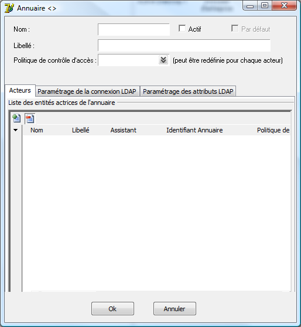
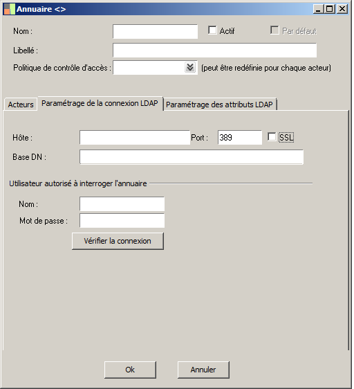
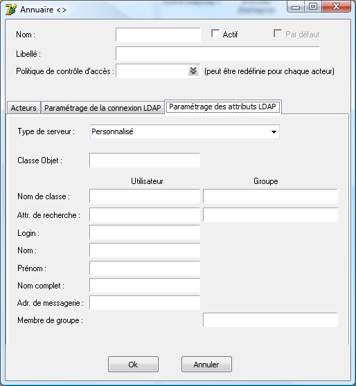
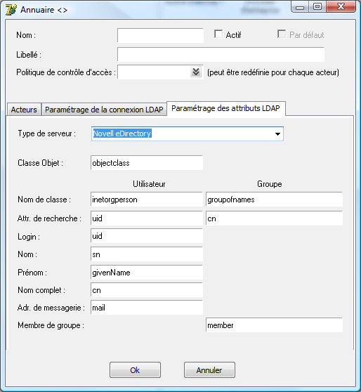
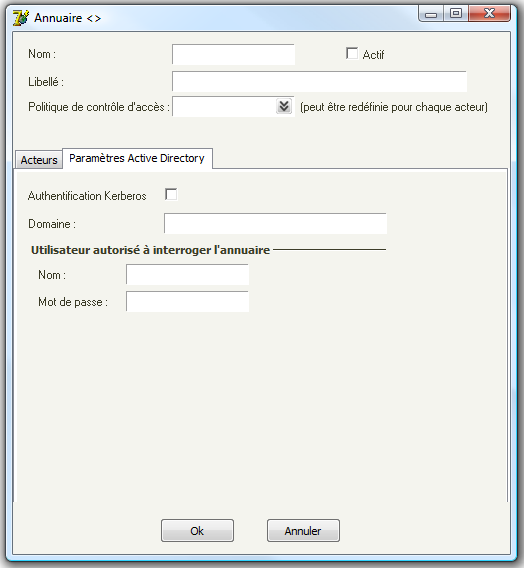

Annuaire d'entreprise (Administration)
Sommaire |
Introduction
La version 6.00 supporte les Annuaires d'Entreprise pour authentifier les utilisateurs.
En conséquence le processus d'authentification a été modifié.
Pour authentifier un utilisateur :
- Avant cette version :
- Le mot de passe de l'utilisateur était vérifié par rapport aux informations stockées dans le référentiel ligne 1000.
- La politique d'authentification était définie et vérifiée par rapport aux informations stockées dans le référentiel ligne 1000.
- Les autorisations d'accès étaient attribués en fonction des droits de l'utilisateur ou des groupes auquels l'utilisateur appartenait.
- A partir de cette version :
- L'utilisateur doit appartenir à l'Annuaire.
- L'annuaire à la responsabilité d'authentifier l'utilisateur.
- L'annuaire à la responsabilité de la politique d'authentification.
- Les groupes auquels appartient l'utilisateur sont les groupes de la ligne 1000 pour lesquels il existe un groupe de l'annuaire mappé sur ce groupe.
- Les autorisations d'accès sont attribués en fonction des droits de l'utilisateur ou des groupes auquels l'utilisateur appartenait.
Notion d'annuaire par défaut
L’annuaire par défaut est utilisé lorsque l’annuaire n’est pas renseigné lors de la connexion.
L’utilisateur desktop/webtop se connecte toujours avec l’annuaire par défaut.(sauf admin)
En revanche, les autres utilisateurs (utilisateur du service..) peuvent se connecter grâce à un annuaire actif différent.
On distingue trois types d'annuaires
- L'Annuaire d'Entreprise (interne)
- Il est livré par défaut, on ne peut pas en créer de nouveaux. Il permet, pour chaque entité déclarée dans cet annuaire, d'appliquer une politique d'authentification. Cet annuaire est utilisable lorsque l'entreprise ne désire pas utiliser un Annuaire externe.
- L'annuaire LDAP (externe)
- Il permet d'authentifier les utilisateurs sur un Annuaire externe respectant la norme LDAP.
- L'annuaire Active Directory (externe)
Il permet d'authentifier les utilisateurs sur Annuaire externe MicroSoft Active Directory.
| Tip : L'utilisateur admin se connecte toujours sur l'annuaire d'entreprise même si celui-ci est désactivé. |
Tip : Il est possible de renseigner le groupe et l’annuaire dans le nom de l’utilisateur ainsi :
|
Paramétrage d'un annuaire LDAP
Les entités actrices de l'annuaire

Ce sont les entités autorisées à s'authentifier.
L'identifiant permet de les retrouver dans l'annuaire LDAP externe (grâce à l'Attribut de recherche paramétré plus loin)
| Tip : On recherche en priorité l'utilisateur parmi les entités pour appliquer les politiques (puis le groupe éventuel) |
Le paramétrage de la connexion LDAP

- Hôte, Port
- Il s'agit de l'adresse réseau du serveur LDAP.
- SSL
- Initie la connexion LDAP en SSL.
- Base DN
- il s'agit du nom de domaine sur lequel seront effectuées les recherches.
- L'utilisateur autorisé à interroger l'annuaire
- Il est utile à double titre :
- Lors d'une tentative de connexion d'un utilisateur pour effectuer une rechercher dans l'annuaire.
- Une fois l'utilisateur identifié pour effectuer des recherches dans l'annuaire, le compte de l'utilisateur n'ayant pas nécessairement les droits de recherche.
Le paramétrage des attributs

Ces informations permettent de définir la structure de l'annuarie, cette structure peut varier d'un fournisseur à un autre.
- Type de serveur
- Le type de serveur permet de sélectionner des profils d'annuaire prés-définis, sélectionner un type de serveur renseigne les zones suivantes.
- Classe Objet
- La classe des classe des l'objet de l'annuaire.
- Nom de classe
- La classe de l'objet de l'annuaire qui contient l'utilsiateur ou le groupe
- L'attribut de recherche
- Il est utilisé pour identifier l'entité dans l'annuaire distant
- Le Nom
- Il est utilisé pour vérifier que l'utilisateur qui se connecte existe dans l'annuaire distant (avant même d'authentifier), cela correspond à l'information saisie par l'utilisateur (login).
- Les Prénom, Nom complet et l'Adresse de messagerie
- Ils permettent de renseigner ces éléments lors de la création de l'utilisateur dans le référentiel.
Par exemple pour un serveur type Novell eDirectory les informations sont renseignées ainsi :

Paramétrage d'un annuaire Active Directory

- Authentification Kerberos
- Cochez cette caes si votre annuaire AD utilise Kerberos.
- Domaine
- Indiquez le domaine Active Directory.
- Utilisateur autorisé à interroger l'annuaire.
- Ce compte est utilisé pour authentifier la connexion auprès de l'annuaire AD, il doit avoir les privilèges nécessaires pour lister les utilisateurs, les groupes et les membres des groupes.
| Tip : Si aucun privilège n'est nécessaire pour lister les utilisateurs, les groupes et les membres des groupes, ne pas renseigner cette zone |
Connexion d'un utilisateur déclaré sur un annuaire externe
Scénario d'utilisation d'un annuaire externe.
L'administrateur souhaite que les utilisateurs LDAP appartenant au groupe "Compta" accèdent au dossier "Dossier compta" de la Ligne 1000.
- Paramétrage de l'annuaire
- L'administrateur crée un annuaire LDAP et le paramètre.
- Ensuite, il crée un groupe "Grp compta" qui représente le groupe de son annuaire LDAP externe.
- Il déclare ce groupe comme acteur dans l'annuaire et renseigne son identifiant LDAP. ("CN=Compta...")
- Connexion d'un utilisateur appartenant à ce groupe
- Lorsqu'un utilisateur appartenant à ce groupe s'authentifie pour la première fois dans la Ligne 1000, il est automatiquement créé.
- La synchronisation des informations de l'utilisateur
- Chaque fois qu'un utilisateur se connecte sur une annuaire type LDAP, on met à jour les informations (mail..) et la liste des groupes auquel il appartient.
Connexion sans passer par la fenêtre de login
Il est possible de se connecter à la ligne 1000 sans passer par la fenêtre de connexion.(rpc, ole..) C'est pourquoi, des mécanismes sont prévus pour que les paramétrages existants fonctionnent toujours.
Lors de la connexion à la la base :
- Si le groupe n'est pas renseigné, et que l'utilisateur n'est pas autorisé en tant que tel dans la société, on recherche le premier groupe autorisé auquel l'utilisateur appartient.
| Whos here now: Members 0 Guests 0 Bots & Crawlers 1 |